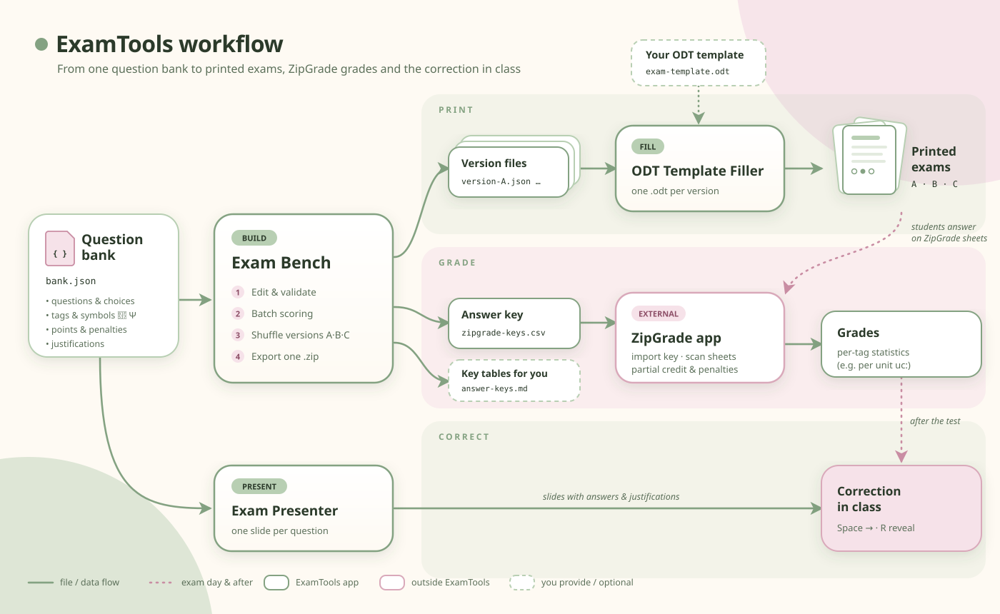

ExamTools
Single-file tools for building, filling and presenting exams — everything runs in your browser.
Build
Exam Bench
Turn a JSON question bank into shuffled exam versions and their ZipGrade answer keys.
Open → FillODT Template Filler
Fill an .odt template with one JSON per version and download the results.
Open → PresentExam Presenter
Turn a question bank into a slide show to go through the correction with students.
Open → LearnManual
The bank format, scoring and penalties, ZipGrade keys, writing ODT templates and the full workflow.
Read →Have an existing test? Convert it with AI
Copy the ready-made prompt, paste it into an AI assistant such as Claude, then attach your Word, PDF or spreadsheet test. It returns a bank you can paste into Exam Bench. How it works
How it fits together
Open full size ↗
Scroll sideways to see the whole diagram.